Home / Classical Worlds / South Asia
Playable heritage gameKotta Pora
Also known as කොට්ටා පොර · pillow fight on a log
Two players perch on a horizontal log held above a pit of soft mud or a pile of mats, one hand behind the back, and swing pillows at each other until one of them tips off. It is a game of laughter and quick balance, played at village gatherings.
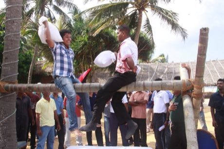

How to play
- Watch your rival's stance: it shows the swing that is coming.
- Tap the answering move while the marker is in the bright zone.
- Big swings push hard but arrive slowly; a quick tap lands first.
- Win two of three rounds.
Rules at a glance
- Every swing, tap and brace beats two others and is beaten by two others.
- A player pushed off the end of the log, or whose balance is gone, loses the round.
- Timing sets the strength of a move: inside the bright zone is full strength.
- A round also ends when one player is six points ahead or when the clock runs out.
- Use Breathe to recover stamina; tired swings are weak.
About the tradition
Kotta pora is played in villages across Sri Lanka at the Sinhala and Tamil new year games, with a log set up over soft ground. Neighbours and cousins cheer, and the fall into the mud is part of the fun.
Origins
Usually placed in the era of Classical Worlds (about 1000 BCE to 500 CE), although its exact origins are uncertain, within the cultural world of South Asia.
Credits
- Game design: World Heritage Games (original)
- Photo: YaSiRu11, CC BY-SA 4.0, source on Wikimedia Commons
- Text: CC BY-SA 4.0, World Heritage Games.
Sources

Get the app
Kotta Pora is one of 18 sports and skill games in the Sports & Skill of the World app for iPhone, iPad and Android. Submitted to the App Store and Google Play; in review. Store links appear here the day it goes live. One app, many traditions, no account needed.
More games to play
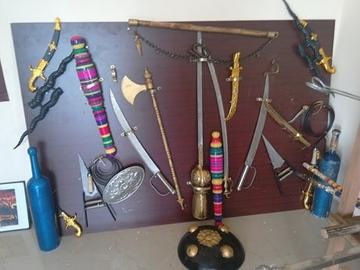
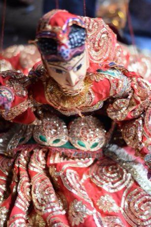
Kathputli string puppets
India · Performance and storytellingPlay preview · in the Story & Theatre of the World app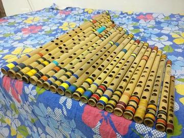
Bansuri bamboo flute
India +1 · Musical instrumentsPlay preview · in the Music & Dance of the World app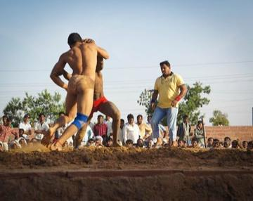
Kushti / Pehlwani mud wrestling
India +1 · Wrestling and martial sportsPlay preview · in the Sports & Skill of the World app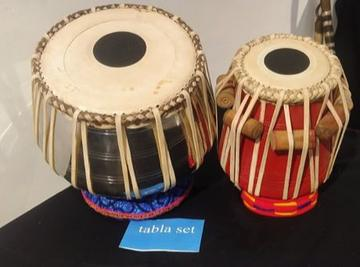
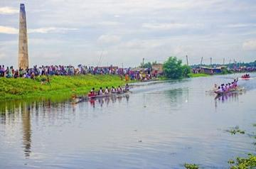
More from Sri Lanka
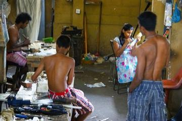
Ambalangoda mask carving
Sri Lanka · Crafts and making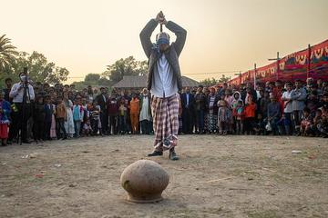
Break the pot
Sri Lanka · Dexterity and skill gamesElle
Sri Lanka · Street and playground games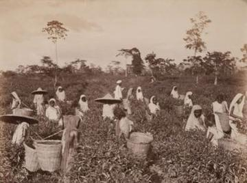
Hill-country tea plucking
Sri Lanka · Puzzles and mind games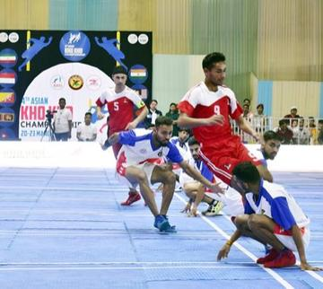
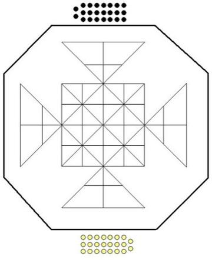